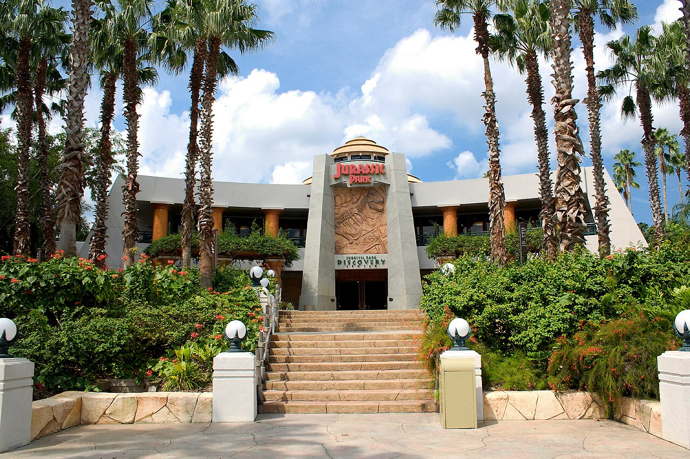
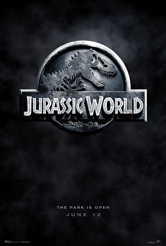
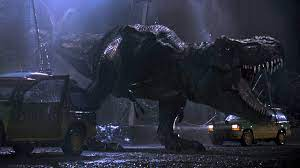
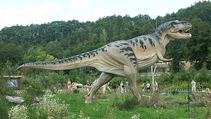
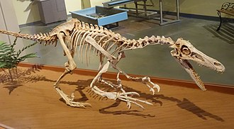
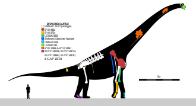

Primeiro poster do filme Jurassic Park para cinema
Jurassic Park (no Brasil, Jurassic Park - O Parque dos Dinossauros ou Jurassic Park - Parque dos Dinossauros[2][3]; em Portugal, Parque Jurássico[4][5]) é um filme de aventura e ficção científica estadunidense de 1993, dirigido por Steven Spielberg e baseado no livro homônimo escrito por Michael Crichton. Produzido pela Amblin Entertainment e distribuído pela Universal Pictures, é estrelado por Sam Neill, Laura Dern, Jeff Goldblum, Richard Attenborough, Ariana Richards, Joseph Mazzello, Samuel L. Jackson e Bob Peck. O filme é centrado na fictícia Isla Nublar, onde John Hammond, um filantropo bilionário, e uma pequena equipe de geneticistas criam um parque temático em uma ilha, onde as principais atrações são variadas espécies de dinossauros recriados através da engenharia genética.
Antes mesmo do livro de Crichton ser publicado, muitos estúdios tentaram adquirir os direitos de imagem. Spielberg, juntamente com a Universal, adquiriu-os por US$ 1,5 milhão antes da publicação em 1990, e Crichton recebeu um adicional de US$ 500 mil para adaptar o romance para as telas. David Koepp escreveu o roteiro final, que deixou de fora grande parte da exposição do romance e violência e fez numerosas mudanças nos personagens. As filmagens ocorreram na Califórnia e no Havaí.
Jurassic Park foi aclamado como um marco na indústria de efeitos especiais, que foram produzidos pela Industrial Light & Magic (com efeitos criados através de computação gráfica) e pela Stan Winston Studios (com efeitos produzidos através de animatrônica). A reconstituição virtual dos dinossauros, para que "contracenassem" com os atores em carne e osso, levou a um estrondoso sucesso de bilheteria, o que apenas confirmou o fascínio que essas criaturas extintas exercem sobre a imaginação das pessoas. [6]

Réplica do centro de visitas do Jurassic Park no filme
Foi lançado nos Estados Unidos em 11 de junho de 1993, chegando no dia 25 do mesmo mês no Brasil. Em Portugal, a estreia ocorreu em 1 de outubro de 1993. Recebeu críticas geralmente favoráveis, destacando-se os efeitos visuais, a trilha sonora composta por John Williams e a direção de Spielberg, apesar de ressalvas à falta de desenvolvimento da história e personagens em oposição aos efeitos. Arrecadou mais de US$ 914 milhões mundialmente, tornando-se o filme de maior bilheteria da história até o lançamento de Titanic, em 1997. Atualmente, é a trigésima nona maior bilheteria de todos os tempos. O longa-metragem foi indicado a três estatuetas na 66.ª cerimônia do Oscar, vencendo nas categorias de Melhor Som, Melhor Edição de Som e Melhores Efeitos Visuais.
Jurassic Park foi relançado nos cinemas no formato 3D em 5 de abril de 2013, arrecadando mais de US$ 40 milhões nos Estados Unidos e Canadá e mais de US$ 50 milhões na China. Com seu relançamento, Jurassic Park tornou-se o primeiro filme da Universal Pictures, e também de Steven Spielberg, a ultrapassar a marca de US$ 1 bilhão em bilheteria. Conquistou também o feito de ser o segundo título a passar tal marca após o relançamento em 3D, sendo o primeiro Star Wars Episode I: The Phantom Menace, em fevereiro de 2012.[7]

Poster do filme Jurassic World lançado em 2015
O filme originou cinco sequências — The Lost World: Jurassic Park, Jurassic Park III, Jurassic World, Jurassic World: Fallen Kingdom e Jurassic World: Dominion —, sendo lançadas em 1997, 2001, 2015, 2018 e 2022, respectivamente.
Enredo
John Hammond (Richard Attenborough) criou recentemente o Jurassic Park, um parque temático habitado por dinossauros clonados a partir do DNA extraído de insetos preservados em âmbar pré-histórico. O parque está localizado na Ilha Nublar, próxima à Costa Rica.
Depois que um operário do parque é atacado por um velociraptor, os investidores de Hammond, representados pelo advogado Donald Gennaro (Martin Ferrero), exigem que especialistas inspecionem o parque e verifiquem se ele tem a segurança necessária para visitações. Gennaro convida o matemático Ian Malcolm (Jeff Goldblum), enquanto Hammond convida o paleontólogo Alan Grant (Sam Neill) e a paleobotânica Ellie Sattler (Laura Dern), que se juntam na ilha aos dois netos de Hammond, Tim (Joseph Mazzello) e Lex Murphy (Ariana Richards). Enquanto o grupo, em dois carros, faz um passeio pelo parque, Hammond observa-os, juntamente com Ray Arnold (Samuel L. Jackson) e Robert Muldoon (Bob Peck), técnico-chefe e guarda-florestal do parque, respectivamente. O passeio não sai de acordo com os planos de Hammond: os dilofossauros e o tiranossauro rex não aparecem, e um tricerátopo fica doente. A maioria dos funcionários do parque parte em um barco para o continente antes de uma tempestade tropical, que obriga o cancelamento da turnê. Todos voltam para os veículos de passeio elétricos, exceto Ellie, que fica com o veterinário do parque, a fim de estudar melhor o Tricerátops.

O programador-chefe do parque, Dennis Nedry (Wayne Knight), está secretamente a serviço de uma das empresas rivais da InGen, a Biosyn, e foi pago para roubar embriões de dinossauros fertilizados. Durante o roubo, Nedry desativa o sistema de segurança do parque, permitindo-lhe acesso ao armazenamento de embriões sem ser visto pelas câmeras. O resto do grupo, devido ao desligamento do sistema, fica preso no meio do parque, com as cercas elétricas desligadas. Isso permite que o Tiranossauro escape de seu cercado. Ele ataca os carros, devora Gennaro e fere Ian gravemente. Grant consegue salvar a si e as crianças graças ao seu conhecimento quanto às limitações visuais do T. Rex. Enquanto isso, Nedry, a caminho das docas da ilha, bate seu jipe e encontra um dilofossauro, que cospe veneno em seus olhos, cegando-o, e depois o mata.
Com Nedry morto, o sistema de segurança não pode ser ligado. Ellie e Muldoon tentam encontrar sobreviventes, conseguindo apenas encontrar Malcolm, ainda vivo. Enquanto tentam encontrar Grant e as crianças dentro da selva, Ian percebe que o Tiranossauro ainda está por perto, e quando o animal aparece, eles fogem dele em um jipe. Incapaz de decifrar o código de Nedry para reativar as cercas de segurança, Arnold recomenda uma reinicialização total dos sistemas do parque. Ele, juntamente com Ellie, Hammond, Muldoon e Malcolm, desliga a energia do parque e vai para o abrigo de segurança, de onde poderá reiniciar todos os sistemas. Como ele não volta, Muldoon e Ellie se dirigem ao abrigo. Ao mesmo tempo, Grant e as crianças descobrem um ninho cheio de ovos quebrados, indicando que os dinossauros estão procriando por conta própria, o que Hammond julgava ter impossibilitado. Enquanto Muldoon e Ellie seguem para o abrigo de manutenção, Muldoon percebe que eles estão sendo caçados por três velociraptores. Ellie chega ao abrigo em segurança e reinicia os sistemas do parque. Ao mesmo tempo, Tim, Lex e Grant escalam uma cerca eletrificada para fora da zona dos animais no parque e Tim quase é morto quando a eletricidade é reativada. Ellie em seguida descobre os restos de Arnold e também é atacada por um raptor, mas consegue escapar. Quando Muldoon tenta atirar em um dos raptores, é morto por outro que o emboscou.
Grant e as crianças dirigem-se para o centro de visitantes, onde Grant deixa as crianças sozinhas na cozinha. Enquanto ele se reúne com Ellie, as crianças escapam de dois raptores na cozinha antes de todos se encontrarem. Lex consegue reativar os sistemas de segurança do parque e o da sala de controle, e Grant consegue contactar Hammond e o manda chamar um resgate, mas os dois raptores encontram o grupo e os atacam. O quarteto foge pelas aberturas, mas são encurralados pelos raptores na saída. Quando os raptores se preparam para atacar, o Tiranossauro aparece no salão principal, mata os raptores, e solta um grande rugido. Assim, todo mundo escapa e eles são resgatados por um helicóptero. Enquanto todos estão voando para fora da ilha, Grant observa um bando de aves (descendentes diretas dos dinossauros) voando sobre o mar.
Elenco
Sam Neill interpreta Dr. Alan Grant, um paleontólogo, que no início do filme trabalha em escavações num deserto de Montana. Ele não gosta de crianças, em particular, mas protege os netos de Hammond no decorrer da história. Neill foi a primeira escolha de Spielberg para o papel, mas ele não aceitou, porque estava ocupado na época. Spielberg, então, convidou o ator William Hurt, mas ele recusou mesmo sem ler o roteiro, e até mesmo Harrison Ford não aceitou a proposta
Laura Dern interpreta Dra. Ellie Sattler, uma paleobotânica e aluna graduada de Grant.
Jeff Goldblum interpreta Ian Malcolm, um matemático e teórico do caos.
Richard Attenborough interpreta John Hammond, o bilionário diretor executivo da InGen e criador do Jurassic Park.
Ariana Richards interpreta Lex Murphy, a neta de Hammond. Cria laços com Grant durante o decorrer da história.
Joseph Mazzello interpreta Tim Murphy, o irmão mais novo de Lex. Também cria laços com Grant.
Wayne Knight interpreta Dennis Nedry, o insatisfeito controlador de sistemas do Jurassic Park. Na verdade, é um espião da BioSyn.
Bob Peck interpreta Robert Muldoon, o guarda-florestal do parque.
Martin Ferrero interpreta Donald Gennaro, um advogado que representa os investidores de Hammond.
Samuel L. Jackson interpreta Ray Arnold, o engenheiro chefe do parque e responsável por desligar a energia do parque para reiniciar o sistema bloqueado por Nedry, liberando os raptores das suas instalações.
B.D. Wong interpreta Dr. Henry Wu, o geneticista chefe do parque e responsável para que os exemplares geneticamente modificados sejam devidamente registados.
Cameron Thor interpreta Lewis Dodgson, gerente da empresa rival da InGen, que forneceu a Nedry um recipiente onde ele guardaria os embriões roubados.
Gerald R. Molen interpreta Gerry Harding, o veterinário do parque.
Elenco principal
Sam Neill
Laura Dern
Jeff Goldblum
Richard Attenborough
Samuel L. Jackson
Bob Peck
B.D. Wong
Dr. Alan Grant
Dra. Ellie Sattler
Ian Malcolm
John Hammond
Ray Arnold
Robert Muldoon
Dr. Henry Wu
Comercial
Jurassic Park tornou-se o filme mais bem sucedido financeiramente na época de seu lançamento, superando E.T. - O Extraterrestre de Spielberg, que detinha o título anteriormente.[49] O filme arrecadou US$ 47 milhões em seu primeiro fim de semana[50] e chegou aos US$ 81,7 milhões em sua primeira semana.[51] Ficou em primeiro lugar durante três semanas, arrecadando US$ 357 milhões nos Estados Unidos e no Canadá.[50] O filme também se saiu muito bem nos mercados internacionais, quebrando recordes no Reino Unido, Japão, Coreia do Sul, México e Taiwan, totalizando finalmente, cerca de $ 914 milhões em todo o mundo.[52] No mundo inteiro, Jurassic Park permaneceu no topo durante quatro anos sendo ultrapassado por Titanic de James Cameron em 1997.[53]
Com seu relançamento, Jurassic Park se tornou o primeiro filme da Universal Pictures e também de Steven Spielberg a ultrapassar a marca de US$ 1 bilhão de arrecadação nos cinemas mundiais.[7] Só no relançamento em 3D, o filme arrecadou US$ 108,8 milhões.[54] Atualmente, o filme é a vigésima sétima maior bilheteria de todos os tempos.
Crítica
Jurassic Park tem aclamação por parte da crítica especializada. Com tomatometer de 93% em base de 110 críticas, o Rotten Tomatoes publicou um consenso: “Jurassic Park é um espetáculo de efeitos especiais e animatrônicos realistas, com algumas das melhores sequências de Spielberg de temor sustentado e puro terror desde Jaws”. Tem 90% de aprovação por parte da audiência, usada para calcular a recepção do público a partir de votos dos usuários do site.[55]
Dinossauros
Apesar de o título do filme se referir ao período Jurássico, a maioria dos dinossauros que aparecem nele pertenciam ao Cretáceo.[27] O roteiro reconhece isso quando o Dr. Grant descreve a ferocidade do Velociraptor a um garoto, dizendo: "Tente se imaginar no período Cretáceo..."
O Tiranossauro é o principal antagonista do filme, e de acordo com Spielberg, foi a razão pela qual ele reescreveu o final, por medo de o público se decepcionar.[19] Antes, um final muito menos surpreendente foi escrito, onde um dos raptores foi morto a tiros e o outro pela queda de um fóssil. O suporte animatrônico criado por Winston pesava 13000 quilos, e media 12 metros de comprimento.[17][28] O paleontólogo Jack Horner disse que ao estar perto deste suporte, foi "o mais próximo que eu já estive de um dinossauro vivo".[28] O sistema de visão do T. Rex foi representado com base em movimentos, ele só enxerga o que se move. Seu rugido é representado pelo som de um filhote de elefante misturado com um tigre e um jacaré, e sua respiração é um golpe de uma baleia.[29] O som de um cão brincando com uma corda foi usado para representar o ruído do Tiranossauro atacando o Galimimo.[19]

Réplica de um Trex
O Velociraptor também tem um papel importante e é retratado como antagonista secundário do filme, depois do Tiranossauro. A descrição do animal não foi baseada no gênero de dinossauro em questão (que em si era significativamente menor), e sim no Deinonico, que já foi chamado de Velociraptor antirrhopus por alguns cientistas.[30] Pouco antes do lançamento do filme, foi descoberta uma espécie parecida com os raptores do filme, denomida Utahraptor, e Stan Winston brincou: "Nós o fizemos, e eles o descobriram."[28] Os velociraptores que atacam Robert Muldoon, eram dublês vestidos de dinossauros.[31] Gritos de um golfinho, berros de uma morsa, assobios de um ganso e gruidae foram utilizados para reproduzir o som dos raptores.[19] Segundo descobertas feitas após o lançamento do filme, a maioria dos paleontólogos concluíram que dromeossauros como o velociraptor e o deinonico tiveram penas.[32]

Fóssil de um velociraptor
O Braquiossauro é o primeiro dinossauro visto pelos visitantes do parque. É erroneamente descrito como um animal que mastiga seu alimento e se apóia nas patas traseiras para alcançar os galhos mais altos das árvores. Apesar das evidências científicas de terem capacidades vocais limitadas, o designer de som Gary Rydstrom decidiu misturar o som causado pelo canto das baleias com o de um asno para trazer, em suas próprias palavras, uma sensação melódica de admiração.[29]

Representação de um Braquiossauro ao lado se um ser humano.